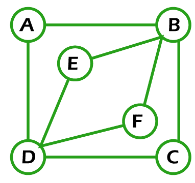

1. Definiție și Condiții
Un graf eulerian este un graf în care există un ciclu eulerian – un ciclu care trece prin fiecare muchie o singură dată și se întoarce în vârful de plecare.
Există două tipuri de grafuri euleriene:
- Graf eulerian – conține un ciclu eulerian (închis).
- Graf semi-eulerian – conține un lanț eulerian (deschis, care nu se întoarce la punctul de start).
Condiții necesare și suficiente
- Un graf conex este eulerian dacă și numai dacă toate vârfurile au grad par.
- Un graf conex este semi-eulerian dacă și numai dacă exact două vârfuri au grad impar (acestea fiind capetele lanțului eulerian).
2. Algoritmi pentru Identificarea și Parcurgerea Grafurilor Euleriene
Algoritmul lui Hierholzer (pentru găsirea ciclului eulerian)
- Alege un vârf de start (orice vârf pentru graf eulerian, un vârf cu grad impar pentru graf semi-eulerian).
- Parcurge graful folosind DFS până când nu mai poți avansa (toate muchiile din vârful curent au fost vizitate).
- Construiește ciclul mergând înapoi și adăugând vârfurile la soluție.
Pseudocod:
stack = [start_vârf]
ciclu = []
while stack:
v = stack[-1]
if degree[v] > 0:
u = vecin nevizitat al lui v
stack.append(u)
elimină muchia (v, u)
else:
ciclu.append(stack.pop())
return ciclu[::-1]
3. Aplicații ale Grafurilor Euleriene
- Problema podurilor din Königsberg (prima problemă de teoria grafurilor, rezolvată de Euler).
- Rutarea în rețele (optimizarea traseelor pentru camioane de gunoi, poștă etc.).
- Design de circuite electronice (parcurgerea tuturor conexiunilor fără repetiții).
4. Exemple
Exemplu de graf eulerian:
Graful complet K₃ (3 vârfuri, toate conectate):
A
/ \
B---C
Toate gradele sunt 2 (par) → ciclu eulerian: A-B-C-A.
Exemplu de graf eulerian necomplet:

Exemplu de graf semi-eulerian:
Graful cu 4 vârfuri: A-B-C-D (lanț liniar).
Grade: A=1, B=2, C=2, D=1 → lanț eulerian: A-B-C-D.
5. Concluzie
Grafurile euleriene sunt fundamentale în teoria grafurilor și au aplicații practice în logistica, electronică și optimizare. Condițiile lor (grade pare și conexitate) le fac ușor de identificat, iar algoritmi precum Hierholzer permit generarea eficientă a ciclurilor euleriene.